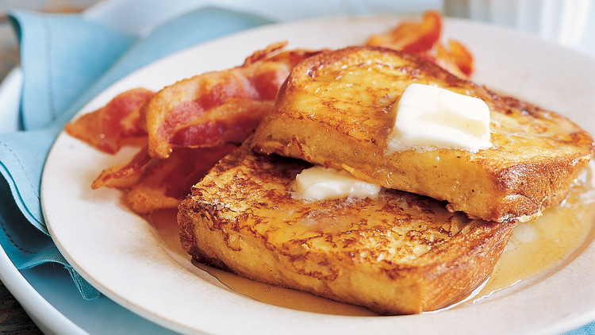

French Toast!

Description
This is a good, old-fashioned way of making delicious French
toast. To add a little pizzazz to it, sprinkle on some
cinnamon after dipping the bread into the batter.
Serve hot with butter and maple syrup.
Ingredients (Yields 4 servings)
- 4 eggs
- 2 tablespoons milk
- ¼ teaspoon ground cinnamon
- 8 slices bread
Steps
-
Combine eggs, milk and cinnamon; beat well. Dip bread
into egg mixture until completely coated.
-
Heat a lightly oiled griddle or frying pan over medium high heat.
Cook bread slices until they are golden brown on both sides.
Serve hot.